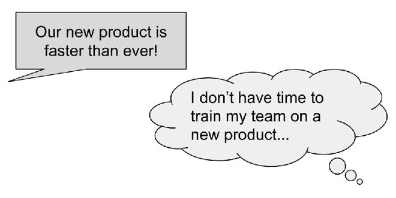

Chapter 22
Ten minutes into my first meeting with the CTO, he just walked out. "If that's how you feel, I think we're done here," he said, metaphorically slamming the door behind him. Ouch.
This would have been a huge consulting project for me, revamping a massive company's hiring process. I (Gayle) had done some initial "evaluation" work to assess fit, which involved reviewing a set of hiring packets and presenting my recommendations. All went well—until this final step of the approval process.
Fundamentally, the exec and I disagreed on what—to him—was a major philosophical point. A hiring manager was trying to rationalize hiring an experienced engineer with no degree, and I didn't understand the concern. I wrote a comment to the effect of "Why is this such a big deal? The candidate has 20 years of experience. Any degree at this point is largely irrelevant."
The CTO disagreed and challenged me on my perspective.
"Would Google do this?" he asked.
"Yes, I believe so," I responded. (In fact, I knew so. I had plenty of degree-less coworkers there.)
"No they wouldn't." He scoffed. This is when he stated his earlier line and left. And that was it for our meeting.
But did it have to be? And, more importantly, was it salvageable?
His employees—who apparently sided with me (and were used to his storming out)—offered some advice. He looks up to companies like Google; if you're right that they don't require degrees, show him that. Stand your ground, but back what you're saying with data.
Ultimately, this salvaged the project, and it's what I should have done from the beginning.
The hiring manager's rationalization was a clue that I'd missed: some key decision maker must really value degrees. That issue needed to be confronted head-on, rather than via my little offhand remark. Moreover, the way to influence the CTO wasn't by showing degrees weren't that important; it was to appeal to his desire to "be like Google."
There was no miscommunication—we were quite clear about what we each believed—but there was a communication error nonetheless.
"Communication" is much more than just making your thoughts comprehensible. It is about understanding what your audience values, and picking up on the clues in their words and behavior. It's about tailoring what you say to them, and being proactive in addressing potential disconnects. It's about persuading by leveraging their values, rather than your own.
Learn what your audience thinks and cares about
Imagine you could give people a magic potion that would let them see inside your brain and know everything you know, and read all your thoughts. Would that be the perfect communication tool?
No!

Communication isn't about transferring your thoughts over to someone else; in fact, it's almost the opposite. Clear communication is about understanding what other people think, and figuring out how to close the gap between their state of mind and yours.
For example, imagine you're trying to convince the executive team to invest in a new product your team wants to build. You provide plenty of evidence to show it would bring in a lot of revenue, but your idea is shot down. How could that happen?
The problem might just be that you didn't understand the executive team's goals and worries. This means that the data you gathered, despite the thoroughness, was ultimately irrelevant to them. Instead of revenue, they might be more focused on user growth. Or they might not have the right kind of salesperson to sell your product.
Effective communication directly addresses the goals and worries of the audience.
Try to build a mental model of the people you're talking to. Guess where they'll agree and where they'll be more skeptical. Try to predict their concerns and the questions they may ask you. If you're not sure, ask them!
Get clear about what you want to say
Clear communication starts with clear thinking. If you're confused about what you're trying to say, other people will be too.
These approaches can help you clarify your thinking:
It's often helpful to distill your thoughts down to three key points. If this is tricky, that might be a sign that you aren't clear enough about your argument.
Tailor your communication for your audience and goals
Before you start, make sure you know why you're speaking up, writing a message, or giving a presentation. What kind of a response do you want?
If your boss tells you that you need to send out a message, make sure to figure out what your goals should be. If you don't ask, you might guess incorrectly.
The details here can matter. For example, if the goal of your status update is to help everyone feel proud of the work your team has done, you might end it with "Give Amy, Bob, and Charles a high five next time you see them!" If your main goal was to encourage people across the company to test the product you might start it with "Last chance to give feedback before the launch!"
What information can you give the audience to make it as easy as possible for them to give you a good response?
As you write your message, keep in mind that your message will probably not be read carefully. People will skim it—so make it skimmable! Use bullets, bold fonts (don't get excessive here, though!), headlines, and so on.
Catch miscommunications as they happen
Miscommunication can happen to anyone, but some people get caught by it a lot. Anyone might misread a word or get caught by surprise when a coworker has a different definition, and that's to be expected. But some people don't catch the problems in the moment, which leads to a lot of frustration.
People who don't notice their miscommunication tend to hear what they want to hear or what they expect to hear. They miss the clues.
Good communicators predict how the people around them will behave and notice any surprises. Anna Marie Clifton explains: "When someone replies differently than I expected, that's a clue that I don't understand them very well or one of us doesn't understand what's being communicated."
Here are some more techniques for reducing miscommunication:
If you find that you're being misunderstood frequently, seek out the advice of a trusted colleague or mentor. Perhaps you use unusual phrasing, or just that tone is poorly conveyed in writing.
Redirect conversations to the right issues
The next time you get in a conversation that doesn't seem to be going anywhere, take a step back and see if you're arguing about the wrong thing.
Let's say you're debating the placement of a button with your designer: you want the button to be visible all the time but the designer wants it to only appear when the user hovers. This might sound like a conversation about visuals and clutter, but it really ought to be a conversation about the target audience and their discoverability needs.
Sometimes, tiny disagreements represent much deeper unresolved issues. An engineer might dig in her heels on a small visual change when the real issue is that she feels like she has wasted her time because an executive has been changing his mind on previously approved designs.
Ask yourself "what is this conversation really about?" and redirect the conversation to the more fundamental issues.
Best practices for written communication
Use a good opening
Keep it short and scannable
Make the call to action clear
Know when to move to a live conversation
Hone your skills
Written communication is asynchronous—the writer can write and send their message on their own time, and the reader can read the message at their own convenience. When that time delay is acceptable, written communication is a great way to be respectful of people's time, with the added benefit that you'll keep a record of what you said.
Best practices for live conversations
Be respectful of people's flow state
Don't ramble
Some people love tossing ideas back and forth in a spontaneous conversation, while others consider it a big interruption. Get to know your teammates to learn what works for each of them.
Best practices for running meetings
Have goals and an agenda for each meeting
Assign a note taker
Match the meeting format to the goals
Ensure everyone has a chance to share their thoughts
Avoid meetings if you don't need them
Keep in mind the costs of a meeting. A 10-person one-hour meeting may cost the company a few thousands dollars in time. Was that worth it?
Best practices for presentations
Get comfortable
Be clear
Keep people engaged
Most people are nervous about giving presentations, but it gets easier each time. If you'd like to gain presentation experience quickly, consider joining your local Toastmasters club. 4
1 . Tl;dr stands for "too long; didn't read," but it's sort of a synonym for "summary."
2 . Many women recount stories of being expected to be the "secretary" for their group. The notetaking falls on them and just continues to. You should therefore be particularly conscious of specific people, or groups of people, doing the bulk of notetaking.
3 . Browse TED talks at https://www.ted.com/ .
4 . For any college students reading this: Consider opportunities to join your school's debate team, or to start teaching as a TA.